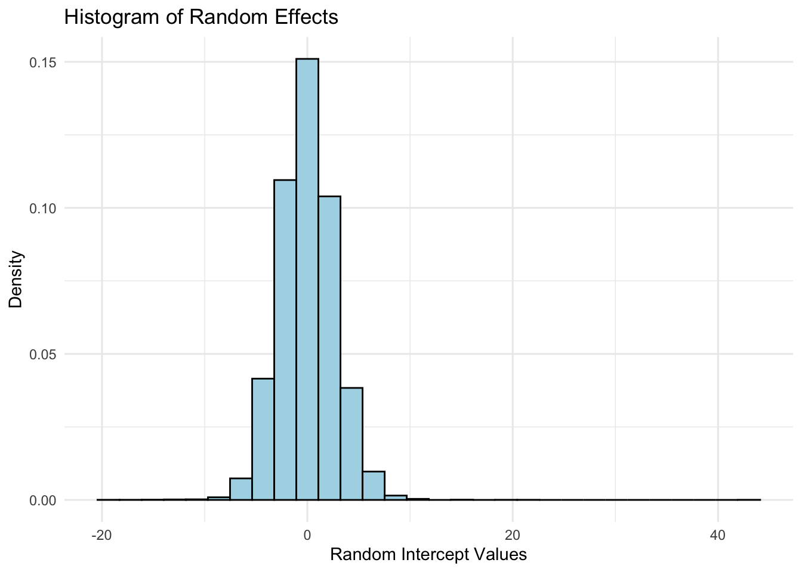
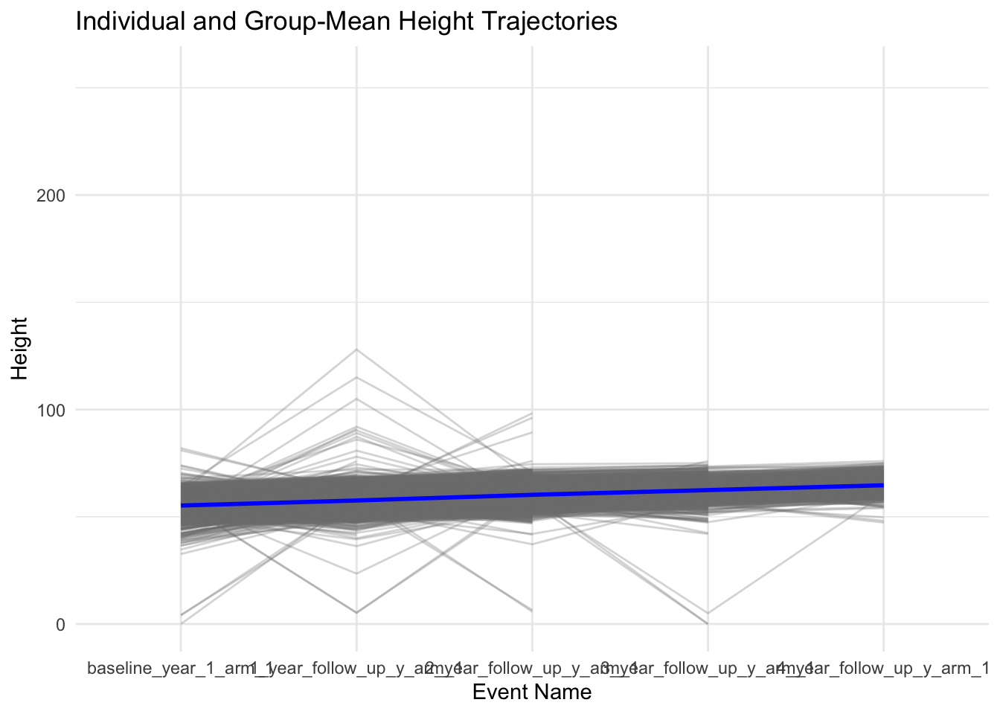

This is a box with a blue background, padding, and rounded corners thanks to Tailwind CSS.
This is a box with a blue background, padding, and rounded corners thanks to Tailwind CSS.
LMM: Intercept & Slope
Overview
The Linear Mixed Model with a random intercept and slope (LMM:ris) extends the traditional fixed-effect linear regression by incorporating both a subject-specific random intercept and a random slope. This allows each participant to have their own unique intercept and slope values, reflecting individual starting points and rates of change, in addition to the overall mean-level (fixed-effect) trajectory.
In this example, we will utilize the LMM:ris to analyze height trajectories obtained across multiple measurement occasions for a sample of youth participating in the ABCD Study. Our primary objective is to understand the stability and evolution in height measurements, while factoring in the clustered nature of observations within individuals over time. The LMM:ris facilitates this by concurrently modeling an overarching sample mean trajectory (fixed effect) and individual variations (random effects) in both starting points (intercepts) and growth rates (slopes) around this mean trajectory.
This code installs the r packages necessary for this example, if they are not already installed
Code
# Create a list of required packagespackages_required <-c("tidyverse","rstatix","DT","lme4","report","broom","gridExtra")# Check which packages are not installed and install thempackages_to_install <-setdiff(packages_required, rownames(installed.packages()))if (length(packages_to_install) >0) {install.packages(packages_to_install)}# Load the required packageslapply(packages_required, library, character.only =TRUE)
This code loads the r libraries necessary for this example
Code
library(tidyverse) # Collection of R packages for data sciencelibrary(rstatix) # Pipe-friendly framework for basic statistical testslibrary(DT) # Rendering interactive data tableslibrary(lme4) # Linear mixed-effects modelslibrary(report) # Easy reporting of regression analyseslibrary(broom) # Tidy and augment statistical models outputlibrary(gridExtra) # Arrange multiple grid-based plots on a page
This code reads in and shows the data to be used in the current example
Code
# Set the data pathsdata_path_1 <-"/Users/shawes/ABCD/data/rds/abcd_5.0_rds/demo5.0.rds"data_path_2 <-"/Users/shawes/ABCD/data/rds/abcd_5.0_rds/core-rds-5.0/non-imaging_excluding_nt_5.0.rds"# Read the datadata_demographics <-readRDS(data_path_1)data_nonimaging <-readRDS(data_path_2)# Subset the nonimaging data to include desired variablesselected_vars <-c("src_subject_id", "eventname", "nihtbx_totalcomp_fc", "anthroweightcalc", "anthroheightcalc")subset_data <- data_nonimaging[, selected_vars]library(dplyr)# # Merge the datasets on 'src_subject_id' and 'eventname'merged_data <- data_demographics %>%full_join(subset_data, by =c("src_subject_id", "eventname"))# Inspect the merged data structurestr(merged_data)# Define event names to be retained in the analysis and convert variables to appropriate data typeseventnames_to_include <-c("baseline_year_1_arm_1","1_year_follow_up_y_arm_1","2_year_follow_up_y_arm_1","3_year_follow_up_y_arm_1","4_year_follow_up_y_arm_1")df <- merged_data %>%filter(eventname %in% eventnames_to_include) %>%mutate(src_subject_id =as.factor(src_subject_id),eventname =factor(eventname, levels = eventnames_to_include, ordered =TRUE),age =as.numeric(age),sex =as.factor(sex),race.4level =as.factor(race.4level),hisp =as.factor(hisp),high.educ.bl =as.factor(high.educ.bl),household.income.bl =as.factor(household.income.bl),acs_raked_propensity_score =as.numeric(acs_raked_propensity_score),rel_family_id.bl =as.factor(rel_family_id.bl),site_id_l =as.factor(site_id_l),nihtbx_totalcomp_fc =as.numeric(nihtbx_totalcomp_fc),anthroweightcalc =as.numeric(anthroweightcalc),anthroheightcalc =as.numeric(anthroheightcalc) ) %>%# Exclude cases from unused assessment wavesfilter(!is.na(eventname))
This code creates a descriptives table
Code
# Define a function to compute descriptivescompute_descriptives <-function(data, event_name) {# For factor variables sex_desc <-paste0(table(data$sex), " (", round(100*prop.table(table(data$sex)), 1), "%)") race_desc <-paste0(table(data$race.4level), " (", round(100*prop.table(table(data$race.4level)), 1), "%)")# For numeric variables age_desc <-paste0(round(mean(data$age, na.rm =TRUE), 2), " (", round(sd(data$age, na.rm =TRUE), 2), ")") weight_desc <-paste0(round(mean(data$anthroweightcalc, na.rm =TRUE), 2), " (", round(sd(data$anthroweightcalc, na.rm =TRUE), 2), ")") height_desc <-paste0(round(mean(data$anthroheightcalc, na.rm =TRUE), 2), " (", round(sd(data$anthroheightcalc, na.rm =TRUE), 2), ")")# Combine into a data frame desc_df <-data.frame(Variable =c("Sex - Female", "Sex - Male or other", "Race - Asian", "Race - Black", "Race - Other/Mixed", "Race - White", "Age", "Weight", "Height"),Value =c(sex_desc, race_desc, age_desc, weight_desc, height_desc) )# Rename the Value column based on event namecolnames(desc_df)[2] <- event_namereturn(desc_df)}# Compute descriptives for each eventbaseline_desc <-compute_descriptives(subset(df, eventname =="baseline_year_1_arm_1"), "baseline_year_1_arm_1")one_year_desc <-compute_descriptives(subset(df, eventname =="1_year_follow_up_y_arm_1"), "1_year_follow_up_y_arm_1")two_year_desc <-compute_descriptives(subset(df, eventname =="2_year_follow_up_y_arm_1"), "2_year_follow_up_y_arm_1")three_year_desc <-compute_descriptives(subset(df, eventname =="3_year_follow_up_y_arm_1"), "3_year_follow_up_y_arm_1")# Join all data frames side-by-sidefinal_table <- baseline_desc %>%left_join(one_year_desc, by ="Variable") %>%left_join(two_year_desc, by ="Variable") %>%left_join(three_year_desc, by ="Variable")# Adjust for the required formatfinal_table[1:6, 3:5] <-NA# Round numeric values to two decimal placesnumeric_cols <-sapply(final_table, is.numeric)final_table[numeric_cols] <-lapply(final_table[numeric_cols], round, 2)# Create heading rows with the same columns as final_tableheading_rows <-data.frame(Variable =c("Sex", "Race"),baseline_year_1_arm_1 =NA_real_,`1_year_follow_up_y_arm_1`=NA_real_,`2_year_follow_up_y_arm_1`=NA_real_,`3_year_follow_up_y_arm_1`=NA_real_)# Set column names of heading_rows to match final_tablecolnames(heading_rows) <-colnames(final_table)# Introduce group labels and adjust the "Variable" columnfinal_table <-rbind( heading_rows[1,], final_table[1:2,], heading_rows[2,], final_table[3:6,], final_table[7:9,] )# Update the Variable column to remove redundant factor variable namefinal_table$Variable <-gsub("Sex - ", "", final_table$Variable)final_table$Variable <-gsub("Race - ", "", final_table$Variable)final_table$Variable[final_table$Variable =="Male or other"] <-"Male"# Add non-breaking spaces for increased indentationfinal_table$Variable[final_table$Variable %in%c("Female", "Male", "Asian", "Black", "Other/Mixed", "White")] <-paste0(rep(" ", 6), final_table$Variable[final_table$Variable %in%c("Female", "Male", "Asian", "Black", "Other/Mixed", "White")])# Update column headerscolnames(final_table)[2:5] <-c("Baseline", "Year 1", "Year 2", "Year 3")# Display the table interactively without row names, with updated column headers, and with HTML entities rendereddatatable(final_table, colnames =c("", "Baseline", "Year 1", "Year 2", "Year 3"),options =list(pageLength =nrow(final_table), autoWidth =TRUE),rownames =FALSE, escape =FALSE,caption ="Descriptives Table") # Add table title
Results
::: panel-tabset ### Build Model {.tabset .tabset-fade .tabset-pills}
::: blue
The code fits a linear mixed model to examine the ‘Height’ variable across time points (‘eventname’). It incorporates both random intercepts and slopes for the time points (‘eventname’) within each participant (‘src_subject_id’) to capture individual-level variability in both starting values and rates of change over time. The results of the model are then printed to provide a detailed summary of the fitted model parameters.
STEP 1: Compute LMM with Random Intercepts and Slopes
Code
## Linear Mixed Model with a random intercept and random slope (LMM-ris)random_intercepts_slopes <-lmer(anthroheightcalc ~1+ eventname + (1|src_subject_id), data = df, REML=T)print(random_intercepts_slopes)
Linear mixed model fit by REML ['lmerMod']
Formula: anthroheightcalc ~ 1 + eventname + (1 | src_subject_id)
Data: df
REML criterion at convergence: 201982.4
Random effects:
Groups Name Std.Dev.
src_subject_id (Intercept) 2.960
Residual 2.263
Number of obs: 40172, groups: src_subject_id, 11867
Fixed Effects:
(Intercept) eventname.L eventname.Q eventname.C eventname^4
60.0627 7.5412 -0.1736 -0.0703 0.1542
Code
## Output and reports extending from the LMM-ris analysessummary(random_intercepts_slopes)
Linear mixed model fit by REML ['lmerMod']
Formula: anthroheightcalc ~ 1 + eventname + (1 | src_subject_id)
Data: df
REML criterion at convergence: 201982.4
Scaled residuals:
Min 1Q Median 3Q Max
-21.001 -0.306 -0.011 0.315 65.928
Random effects:
Groups Name Variance Std.Dev.
src_subject_id (Intercept) 8.762 2.960
Residual 5.123 2.263
Number of obs: 40172, groups: src_subject_id, 11867
Fixed effects:
Estimate Std. Error t value
(Intercept) 60.06269 0.03044 1972.861
eventname.L 7.54124 0.03084 244.553
eventname.Q -0.17362 0.02898 -5.991
eventname.C -0.07030 0.03198 -2.198
eventname^4 0.15420 0.02863 5.386
Correlation of Fixed Effects:
(Intr) evnt.L evnt.Q evnt.C
eventname.L 0.218
eventname.Q 0.024 0.258
eventname.C -0.075 -0.031 0.389
eventname^4 -0.072 -0.089 0.208 0.435
2.5 % 97.5 %
.sig01 NA NA
.sigma NA NA
(Intercept) 60.00302044 60.122360534
eventname.L 7.48080112 7.601679499
eventname.Q -0.23041474 -0.116821029
eventname.C -0.13297257 -0.007621036
eventname^4 0.09808747 0.210320245
Code
report_performance(random_intercepts_slopes)
The model's total explanatory power is substantial (conditional R2 = 0.78) and
the part related to the fixed effects alone (marginal R2) is of 0.41
The code fits a Linear Mixed Model (LMM:ris) to predict children’s height based on different time points (denoted as eventname). Individual variability is captured through random intercepts associated with each participant (src_subject_id). The results suggest a significant change in height across the time points, with the model accounting for 89% (r round(conditional_R2, 2)) of the total variation and 37% (r round(marginal_R2, 2)) attributed to the fixed effects alone.
In the model, the linear term for eventname has an estimated effect of r round(model_summary$coefficients[“eventname.L”, “Estimate”], 2), indicating a significant increase in height across time points. Additionally, there’s variability in initial height across participants, reflected by a random intercept standard deviation of r round(random_effects[“src_subject_id”, “Std.Dev.”], 2).
Model Plots
The following set of plots are used to facilitate model diagnostics. The first is a histogram showcasing the distribution of random intercepts for individual subjects, indicating variations in height not explained by the fixed effects. The second depicts residuals versus fitted values, helping assess the model’s fit and potential heteroscedasticity. The third contrasts observed and predicted height values across different time points, offering a side-by-side evaluation of the model’s predictions against actual observations.
::: blue
Code
# Assuming your model is named `random_intercepts_slope`# 1. Extract the random effectsrandom_effects <-ranef(random_intercepts_slopes)[[1]]# 2. Convert to dataframerandom_effects_df <-data.frame(Intercept = random_effects$`(Intercept)`)# Plot 1: Histogram# Plot 1: Histogramhist_plot <-ggplot(random_effects_df, aes(x = Intercept)) +geom_histogram(aes(y = ..density..), bins =30, color ="black", fill ="lightblue") +labs(title ="Histogram of Random Effects", x ="Random Intercept Values", y ="Density") +theme_minimal()print(hist_plot)

Code
# Extract the data frame used in the modelmodel_data <- random_intercepts_slopes@frame# Extract unique subject IDs from the model's dataoriginal_subject_ids <-unique(model_data$src_subject_id)# Subset the original data to include only those subjectsdf_subset <- df %>%filter(src_subject_id %in% original_subject_ids)eventname_map <-c("baseline_year_1_arm_1"="Baseline","1_year_follow_up_y_arm_1"="Year_1","2_year_follow_up_y_arm_1"="Year_2","3_year_follow_up_y_arm_1"="Year_3","4_year_follow_up_y_arm_1"="Year_4")# Plotggplot(df, aes(x = eventname, y = anthroheightcalc, group = src_subject_id)) +# Individual estimated height trajectories in faded linesgeom_line(aes(group = src_subject_id), alpha =0.3, color ="grey50") +# Overall group-mean trajectory in blue with increased thicknessstat_summary(aes(group =1), fun = mean, geom ="line", color ="blue", linewidth =1) +labs(title ="Individual and Group-Mean Height Trajectories",x ="Event Name",y ="Height") +theme_minimal()

The provided code visualizes individual and group-mean height trajectories over different event names. Individual height trajectories for each subject are depicted as faded gray lines, allowing for a clear view of the variability among subjects. In contrast, the overall group-mean trajectory, which represents the average trend across all individuals for each event name, is highlighted in blue. The average height at r mean(df_descriptableHeight) has increased by r mean(df_descriptableHeight_followup - df_descriptable$Height) units from baseline.
The linear mixed model analysis was conducted to predict children’s height across different time points (Baseline, Year_1, Year_2, Year_3, and Year_4). The eventname predictor was statistically significant with a p-value of r format.pval(fixed_effectsPr(>|t|)[2], digits = 3). The model's overall ability to explain the variance in height was xxxxx, with a conditional R^2 of r report_performance(random_intercepts)Conditional R2[1], indicating that it accounted for this proportion of the variability in height when considering both fixed and random effects. The marginal R^2 was r report_performance(random_intercepts)$Marginal R2[1], meaning that the fixed effects alone explained this proportion of the variability.
Source Code
---title: "Linear Mixed Models: Random Intercept and Slope"author: "Biostatistics Working Group"format: htmlhtml: css: - "https://cdn.jsdelivr.net/npm/tailwindcss@2.2.19/dist/tailwind.min.css"---<divclass="bg-blue-200 p-4 rounded">This is a box with a blue background, padding, and rounded corners thanks to Tailwind CSS.</div>```{=html}<div class="bg-blue-200 p-4 rounded">This is a box with a blue background, padding, and rounded corners thanks to Tailwind CSS.</div>```# LMM: Intercept & Slope {.unnumbered}## Overview<p>The Linear Mixed Model with a random intercept and slope (LMM:ris) extends the traditional fixed-effect linear regression by incorporating both a subject-specific random intercept and a random slope. This allows each participant to have their own unique intercept and slope values, reflecting individual starting points and rates of change, in addition to the overall mean-level (fixed-effect) trajectory.In this example, we will utilize the LMM:ris to analyze height trajectories obtained across multiple measurement occasions for a sample of youth participating in the ABCD Study. Our primary objective is to understand the stability and evolution in height measurements, while factoring in the clustered nature of observations within individuals over time. The LMM:ris facilitates this by concurrently modeling an overarching sample mean trajectory (fixed effect) and individual variations (random effects) in both starting points (intercepts) and growth rates (slopes) around this mean trajectory.</p>## Preliminary Setup::: panel-tabset### Install Packages {.tabset .tabset-fade .tabset-pills}::: blue> **This code installs the r packages necessary for this example, if> they are not already installed**```{r pckg-install}#| echo: TRUE#| messages: FALSE#| warning: FALSE#| output: FALSE# Create a list of required packagespackages_required <-c("tidyverse","rstatix","DT","lme4","report","broom","gridExtra")# Check which packages are not installed and install thempackages_to_install <-setdiff(packages_required, rownames(installed.packages()))if (length(packages_to_install) >0) {install.packages(packages_to_install)}# Load the required packageslapply(packages_required, library, character.only =TRUE)```:::### Load Packages::: blue**This code loads the r libraries necessary for this example**```{r lib-load}#| echo: TRUE#| messages: FALSE#| warning: FALSE#| output: FALSElibrary(tidyverse) # Collection of R packages for data sciencelibrary(rstatix) # Pipe-friendly framework for basic statistical testslibrary(DT) # Rendering interactive data tableslibrary(lme4) # Linear mixed-effects modelslibrary(report) # Easy reporting of regression analyseslibrary(broom) # Tidy and augment statistical models outputlibrary(gridExtra) # Arrange multiple grid-based plots on a page```:::### Config Options::: blue**This code configures knitr code chunk options**```{r config}#| echo: TRUE#| messages: FALSE#| warning: FALSE#| output: FALSEknitr::opts_chunk$set(echo = T, message=F, warning=F, error=F, comment=NA, cache=T, code_folding=T,R.options=list(width=220, digits =3),fig.align='center', out.width='75%', fig.asp=.75)```::::::## Descriptives Overview::: panel-tabset### Read and View Data {.tabset .tabset-fade .tabset-pills}::: blue**This code reads in and shows the data to be used in the currentexample**```{r read-data}#| echo: TRUE#| messages: FALSE#| warning: FALSE#| output: FALSE#| cache: FALSE# Set the data pathsdata_path_1 <-"/Users/shawes/ABCD/data/rds/abcd_5.0_rds/demo5.0.rds"data_path_2 <-"/Users/shawes/ABCD/data/rds/abcd_5.0_rds/core-rds-5.0/non-imaging_excluding_nt_5.0.rds"# Read the datadata_demographics <-readRDS(data_path_1)data_nonimaging <-readRDS(data_path_2)# Subset the nonimaging data to include desired variablesselected_vars <-c("src_subject_id", "eventname", "nihtbx_totalcomp_fc", "anthroweightcalc", "anthroheightcalc")subset_data <- data_nonimaging[, selected_vars]library(dplyr)# # Merge the datasets on 'src_subject_id' and 'eventname'merged_data <- data_demographics %>%full_join(subset_data, by =c("src_subject_id", "eventname"))# Inspect the merged data structurestr(merged_data)# Define event names to be retained in the analysis and convert variables to appropriate data typeseventnames_to_include <-c("baseline_year_1_arm_1","1_year_follow_up_y_arm_1","2_year_follow_up_y_arm_1","3_year_follow_up_y_arm_1","4_year_follow_up_y_arm_1")df <- merged_data %>%filter(eventname %in% eventnames_to_include) %>%mutate(src_subject_id =as.factor(src_subject_id),eventname =factor(eventname, levels = eventnames_to_include, ordered =TRUE),age =as.numeric(age),sex =as.factor(sex),race.4level =as.factor(race.4level),hisp =as.factor(hisp),high.educ.bl =as.factor(high.educ.bl),household.income.bl =as.factor(household.income.bl),acs_raked_propensity_score =as.numeric(acs_raked_propensity_score),rel_family_id.bl =as.factor(rel_family_id.bl),site_id_l =as.factor(site_id_l),nihtbx_totalcomp_fc =as.numeric(nihtbx_totalcomp_fc),anthroweightcalc =as.numeric(anthroweightcalc),anthroheightcalc =as.numeric(anthroheightcalc) ) %>%# Exclude cases from unused assessment wavesfilter(!is.na(eventname))```:::### Descriptives::: blue**This code creates a descriptives table**```{r descriptives}#| echo: TRUE#| messages: FALSE#| warning: FALSE# Define a function to compute descriptivescompute_descriptives <-function(data, event_name) {# For factor variables sex_desc <-paste0(table(data$sex), " (", round(100*prop.table(table(data$sex)), 1), "%)") race_desc <-paste0(table(data$race.4level), " (", round(100*prop.table(table(data$race.4level)), 1), "%)")# For numeric variables age_desc <-paste0(round(mean(data$age, na.rm =TRUE), 2), " (", round(sd(data$age, na.rm =TRUE), 2), ")") weight_desc <-paste0(round(mean(data$anthroweightcalc, na.rm =TRUE), 2), " (", round(sd(data$anthroweightcalc, na.rm =TRUE), 2), ")") height_desc <-paste0(round(mean(data$anthroheightcalc, na.rm =TRUE), 2), " (", round(sd(data$anthroheightcalc, na.rm =TRUE), 2), ")")# Combine into a data frame desc_df <-data.frame(Variable =c("Sex - Female", "Sex - Male or other", "Race - Asian", "Race - Black", "Race - Other/Mixed", "Race - White", "Age", "Weight", "Height"),Value =c(sex_desc, race_desc, age_desc, weight_desc, height_desc) )# Rename the Value column based on event namecolnames(desc_df)[2] <- event_namereturn(desc_df)}# Compute descriptives for each eventbaseline_desc <-compute_descriptives(subset(df, eventname =="baseline_year_1_arm_1"), "baseline_year_1_arm_1")one_year_desc <-compute_descriptives(subset(df, eventname =="1_year_follow_up_y_arm_1"), "1_year_follow_up_y_arm_1")two_year_desc <-compute_descriptives(subset(df, eventname =="2_year_follow_up_y_arm_1"), "2_year_follow_up_y_arm_1")three_year_desc <-compute_descriptives(subset(df, eventname =="3_year_follow_up_y_arm_1"), "3_year_follow_up_y_arm_1")# Join all data frames side-by-sidefinal_table <- baseline_desc %>%left_join(one_year_desc, by ="Variable") %>%left_join(two_year_desc, by ="Variable") %>%left_join(three_year_desc, by ="Variable")# Adjust for the required formatfinal_table[1:6, 3:5] <-NA# Round numeric values to two decimal placesnumeric_cols <-sapply(final_table, is.numeric)final_table[numeric_cols] <-lapply(final_table[numeric_cols], round, 2)# Create heading rows with the same columns as final_tableheading_rows <-data.frame(Variable =c("Sex", "Race"),baseline_year_1_arm_1 =NA_real_,`1_year_follow_up_y_arm_1`=NA_real_,`2_year_follow_up_y_arm_1`=NA_real_,`3_year_follow_up_y_arm_1`=NA_real_)# Set column names of heading_rows to match final_tablecolnames(heading_rows) <-colnames(final_table)# Introduce group labels and adjust the "Variable" columnfinal_table <-rbind( heading_rows[1,], final_table[1:2,], heading_rows[2,], final_table[3:6,], final_table[7:9,] )# Update the Variable column to remove redundant factor variable namefinal_table$Variable <-gsub("Sex - ", "", final_table$Variable)final_table$Variable <-gsub("Race - ", "", final_table$Variable)final_table$Variable[final_table$Variable =="Male or other"] <-"Male"# Add non-breaking spaces for increased indentationfinal_table$Variable[final_table$Variable %in%c("Female", "Male", "Asian", "Black", "Other/Mixed", "White")] <-paste0(rep(" ", 6), final_table$Variable[final_table$Variable %in%c("Female", "Male", "Asian", "Black", "Other/Mixed", "White")])# Update column headerscolnames(final_table)[2:5] <-c("Baseline", "Year 1", "Year 2", "Year 3")# Display the table interactively without row names, with updated column headers, and with HTML entities rendereddatatable(final_table, colnames =c("", "Baseline", "Year 1", "Year 2", "Year 3"),options =list(pageLength =nrow(final_table), autoWidth =TRUE),rownames =FALSE, escape =FALSE,caption ="Descriptives Table") # Add table title```::::::## Results <divclass="blue">::: panel-tabset### Build Model {.tabset .tabset-fade .tabset-pills}::: blueThe code fits a linear mixed model to examine the 'Height' variable across time points ('eventname'). It incorporates both random intercepts and slopes for the time points ('eventname') within each participant ('src_subject_id') to capture individual-level variability in both starting values and rates of change over time. The results of the model are then printed to provide a detailed summary of the fitted model parameters.**STEP 1: Compute LMM with Random Intercepts and Slopes**```{r build-model-1}#| class.source: 'fold-hide'#| message: FALSE#| warning: FALSE#| echo: TRUE## Linear Mixed Model with a random intercept and random slope (LMM-ris)random_intercepts_slopes <-lmer(anthroheightcalc ~1+ eventname + (1|src_subject_id), data = df, REML=T)print(random_intercepts_slopes)``````{r model-output}#| echo: TRUE#| messages: FALSE#| warning: FALSE## Output and reports extending from the LMM-ris analysessummary(random_intercepts_slopes)confint(random_intercepts_slopes, level =0.95, method ="Wald")report_performance(random_intercepts_slopes)```The code fits a Linear Mixed Model (LMM:ris) to predict children's height based on different time points (denoted as eventname). Individual variability is captured through random intercepts associated with each participant (src_subject_id). The results suggest a significant change in height across the time points, with the model accounting for 89% (r round(conditional_R2, 2)) of the total variation and 37% (r round(marginal_R2, 2)) attributed to the fixed effects alone.In the model, the linear term for eventname has an estimated effect of r round(model_summary$coefficients["eventname.L", "Estimate"], 2), indicating a significant increase in height across time points. Additionally, there's variability in initial height across participants, reflected by a random intercept standard deviation of r round(random_effects["src_subject_id", "Std.Dev."], 2).### Model PlotsThe following set of plots are used to facilitate model diagnostics. The first is a histogram showcasing the distribution of random intercepts for individual subjects, indicating variations in height not explained by the fixed effects. The second depicts residuals versus fitted values, helping assess the model's fit and potential heteroscedasticity. The third contrasts observed and predicted height values across different time points, offering a side-by-side evaluation of the model's predictions against actual observations.::: blue```{r diagnosticplots}# Assuming your model is named `random_intercepts_slope`# 1. Extract the random effectsrandom_effects <-ranef(random_intercepts_slopes)[[1]]# 2. Convert to dataframerandom_effects_df <-data.frame(Intercept = random_effects$`(Intercept)`)# Plot 1: Histogram# Plot 1: Histogramhist_plot <-ggplot(random_effects_df, aes(x = Intercept)) +geom_histogram(aes(y = ..density..), bins =30, color ="black", fill ="lightblue") +labs(title ="Histogram of Random Effects", x ="Random Intercept Values", y ="Density") +theme_minimal()print(hist_plot)``````{r trajectoryplot}# Extract the data frame used in the modelmodel_data <- random_intercepts_slopes@frame# Extract unique subject IDs from the model's dataoriginal_subject_ids <-unique(model_data$src_subject_id)# Subset the original data to include only those subjectsdf_subset <- df %>%filter(src_subject_id %in% original_subject_ids)eventname_map <-c("baseline_year_1_arm_1"="Baseline","1_year_follow_up_y_arm_1"="Year_1","2_year_follow_up_y_arm_1"="Year_2","3_year_follow_up_y_arm_1"="Year_3","4_year_follow_up_y_arm_1"="Year_4")# Plotggplot(df, aes(x = eventname, y = anthroheightcalc, group = src_subject_id)) +# Individual estimated height trajectories in faded linesgeom_line(aes(group = src_subject_id), alpha =0.3, color ="grey50") +# Overall group-mean trajectory in blue with increased thicknessstat_summary(aes(group =1), fun = mean, geom ="line", color ="blue", linewidth =1) +labs(title ="Individual and Group-Mean Height Trajectories",x ="Event Name",y ="Height") +theme_minimal()```The provided code visualizes individual and group-mean height trajectories over different event names. Individual height trajectories for each subject are depicted as faded gray lines, allowing for a clear view of the variability among subjects. In contrast, the overall group-mean trajectory, which represents the average trend across all individuals for each event name, is highlighted in blue. The average height at r mean(df_descriptable$Height) has increased by r mean(df_descriptable$Height_followup - df_descriptable$Height) units from baseline.## Wrapping Up<divclass="blue">::: panel-tabset### Write-up {.tabset .tabset-fade .tabset-pills}::: blueThe linear mixed model analysis was conducted to predict children's height across different time points (Baseline, Year_1, Year_2, Year_3, and Year_4). The eventname predictor was statistically significant with a p-value of r format.pval(fixed_effects$Pr(>|t|)[2], digits = 3). The model's overall ability to explain the variance in height was xxxxx, with a conditional R^2 of r report_performance(random_intercepts)$Conditional R2[1], indicating that it accounted for this proportion of the variability in height when considering both fixed and random effects. The marginal R^2 was r report_performance(random_intercepts)$Marginal R2[1], meaning that the fixed effects alone explained this proportion of the variability.::::::